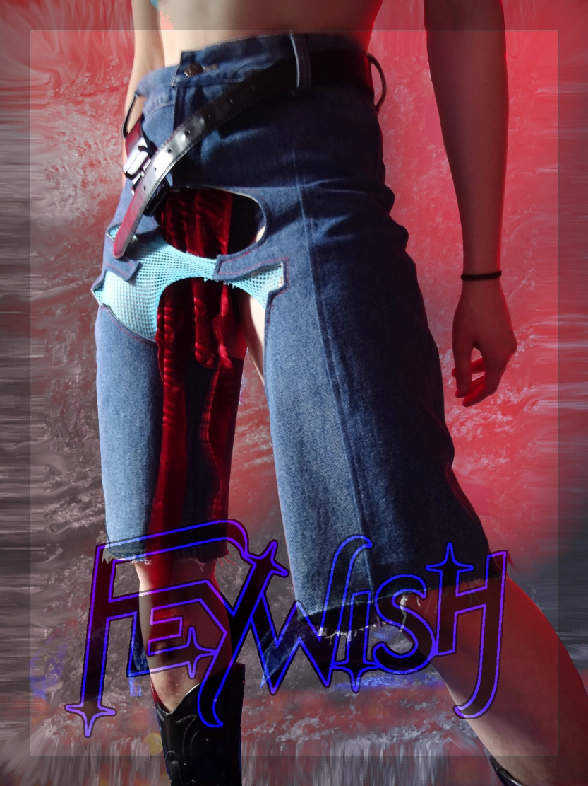
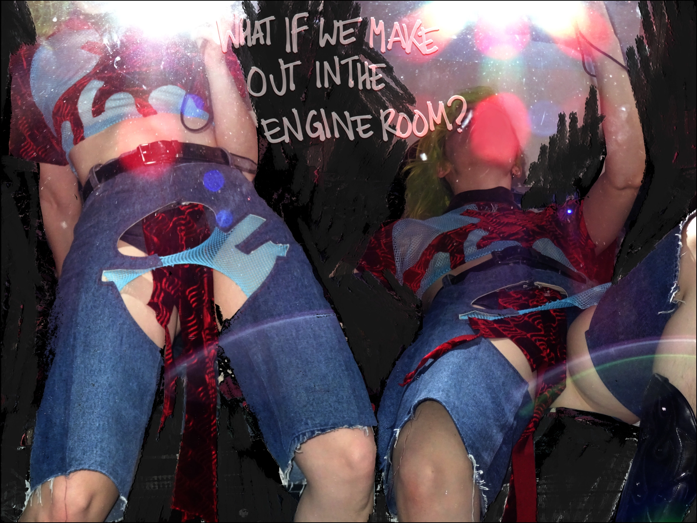

A sexed up 60’s science fiction environmental set.
This collection was designed in response to a brief set out by Sucker Store as part of my studies at RMIT. Engine Room responds to the trends and character of Naarm, and injects classic science fiction as a curveball influence.
The designs favour crisp geometry, jewel-tones, and tactless reveal, delivering sets that are eye-catching and casually horny. Both pieces of the Anomaly prototype were made from specially developed patterns and utilize secondhand materials.
The Anomaly crop top features mesh windows to the chest and back, with a close turtleneck collar and topstitched organic cut-outs. The Anomaly chaps are crotchless and assless, with a stretch of mesh across the way and a sexy flat-felled seam down the front of each leg. Paired with a sci-horror velvet streak.
What if we Make Out in the Engine Room? was designed under the artist name Feywish, hence the logo. This photoshoot took place in on Wurundjeri land.

